The problems today
Irrelevance
Despite similar actual risk coverage, the target market and the relevance of these products are significantly different betwen regular insurance and the developing market. Consumers vary in terms of insurance knowledge, risk pereption, as well as local customs and culture.

Sustainability
Underwriting and settlement costs of conventional insurance products are typically 40% and up. At much lower premium levels, underwriting and settlement costs are unlikely to scale down enough to make insurance schemes sustainable. These costs, if combined with current loss ratios of approximately 79%, will deem most insurance schemes untenable.
Insurance For The Masses
is the solution.
Using technology to simplify processes and cut costs
Our Technology
Our Simplified Process
Beneficiaries

People
IFM provides effective Risk protection for the masses. IFM products are easy to understand, simple to use, and accessible to all. At a macro level, IFM provides a much-needed safety net for developing communities, protecting their productive assets and improving their livelihoods.
Insurers
IFM brings mass markets opportunities for insurance companies via new product offerings. This new breed of insurance products will significantly lower administrative expenses via simplified and automated processes, and make the low-premium business work for the insurers’ portfolios.

Government